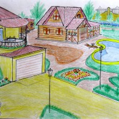
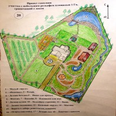
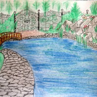

- 

- 
- 
Error: Undefined index: title File: /var/www/votchina.su/data/www/votchina.ru/plugins/contests/contests_short-list.php (70)
Error: Undefined index: title File: /var/www/votchina.su/data/www/votchina.ru/plugins/contests/contests_short-list.php (70)

{kind=link}
Error: Undefined index: title File: /var/www/votchina.su/data/www/votchina.ru/plugins/contests/contests_short-list.php (70)
{kind=link}
Error: Undefined index: title File: /var/www/votchina.su/data/www/votchina.ru/plugins/contests/contests_short-list.php (70)
{kind=link}
Автор: Вадим Зиамбетов
Номинация: Эскизный проект частного владения со сложными элементами типа: рельеф / перепады / овраг / водоем
Участок: 20
Описание:
На площадке перед домом находится фонтан, а за ним игровая площадка с газоном, где можно играть в различные игры на воздухе. Эта часть участка с дорогой к дому выровнена дополнительным грунтом и представляет собой ровную поверхность.
В правой части проекта находится ручей, который начинается с «водопада» с имитацией горно-лесистой местности, где камень сочетается с растительностью, а на заднем плане небольшие деревья. Вода из водопада наполняет малый «пруд», поверхность которого находится чуть выше по отношению к поверхности площадки из разного вида камня перед ним. Вода впадает в ручей который протекает вдоль восточного забора. Забор в некоторых участках имеет маленькие вертикальные сады, а в некоторых — просто вьющиеся растения. Непосредственный берег ручья из камня, где по желанию может использоваться камень разного вида. Дальше вода поступает в большой «пруд» с большим каменным берегом и имитацией горно-лесистой местности в его северной части. Система водоснабжения замкнутая с двойной отчисткой (фильтрацией), в случае остановки насоса вода из ручья стечет в большой «пруд» без опасности переполнить его, а оставшаяся вода в малом «пруде» позволит запустить систему без осложнений. Так же можно при необходимости полностью осушить все водоемы, слив воду в канализационную систему или наружу в район леса для дополнительной его «поливки» без ущерба для него. Перед малым «прудом» имеется так же большая площадка с летней беседкой для шумных мероприятий с большим количеством гостей и использованием жаровни.
Газон имеет насаждения разного вида от цветов и разной высоты кустарника, до разной высоты и формы деревьев. Если по всему участку посажены цветы, не требующие за собой тщательного ухода, но от этого ничуть не мрачные, а наоборот яркие в своем разнообразии, то газон около летней беседки имеет цветы более насыщенные и разноуровневые. Дорожки выложены разного вида камнем, а некоторые переходы имеют зеленые арки (из двух соединенных в кроне деревьев). Система полива газона автоматическая. Система освещения смешанная с принудительным и автоматическим включением по сигналу датчика.
Пульт управления системой подачи и отчистки воды в бассейн находится в летней кухне (деревянная из сруба), которые эксплуатируются в теплое время года. Хотя летняя кухня может вполне использоваться и зимой. За летней кухней находится подсобное сооружение, баня и домик садовника (для инструментов и садового оборудования). Площадка перед баней выложена из большого камня и из такого же камня идет дорожка к большому «пруду», площадка может оборудоваться навесом, деревянными креслами, которые позволяют любоваться замечательным видом северной части участка и лесом в любое время дня. Северная часть забора — кованная решетчатая, которые позволяют видеть лес, он имеет красивые ворота, которые открываясь, позволяют совершить прогулку в лесу. Решетчатый забор визуально расширяет участок.
Возле садового домика находится огород, где можно выращивать свои овощи и ягоды, а если хозяева не любят огороды, то там можно высадить различные цветы и использовать как цветник, в том числе и многоярусный. Это позволит украсить вид из западного окна. Так же урожай фруктов и винограда позволит собрать летний сад.
Жизнь людей на таком участке будет яркой, уютной и занимательной весь год.
Error: Undefined variable: flagNext File: /var/www/votchina.su/data/www/votchina.ru/plugins/contests/contests_short-list.php (106)
Error: Undefined variable: flagNext File: /var/www/votchina.su/data/www/votchina.ru/plugins/contests/contests_short-list.php (106)